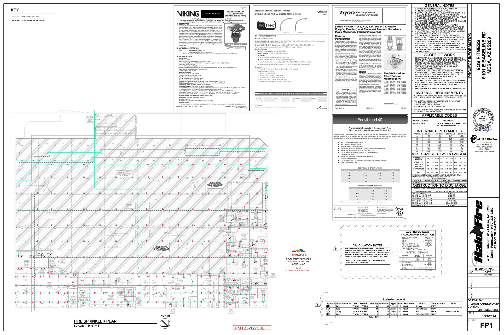
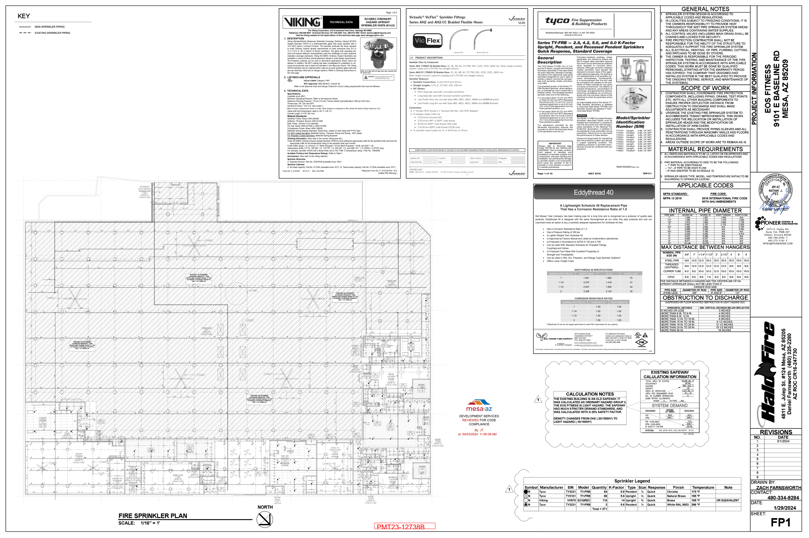
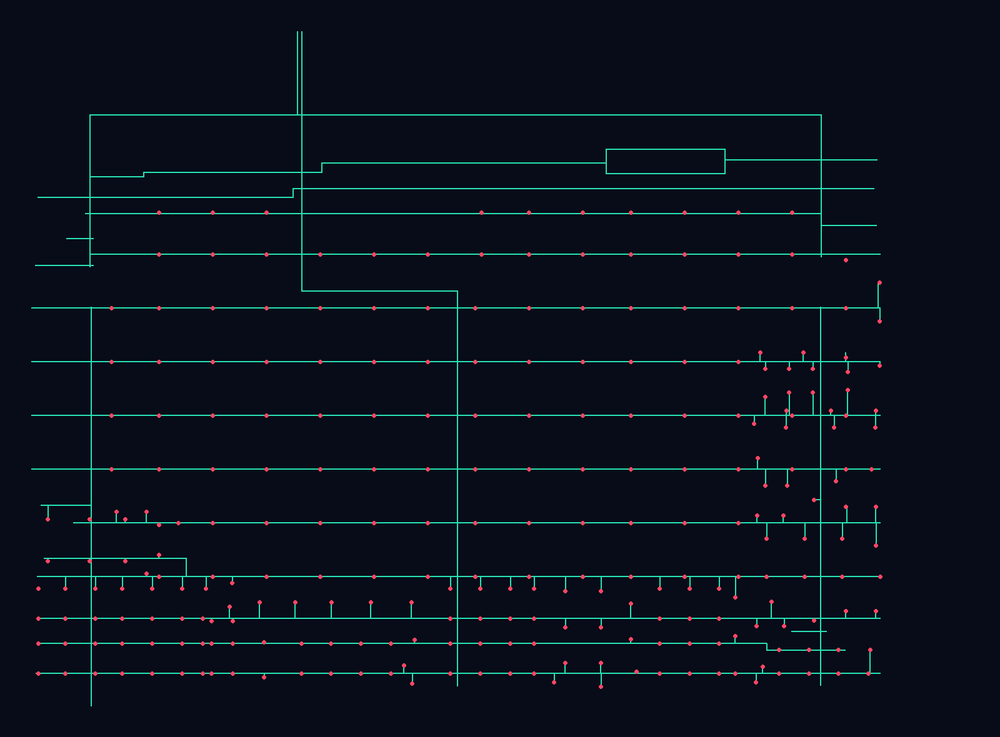

Approved FP1 with source-DWG projection
Green is exported pipe centerline geometry; coral is the WCS-corrected sprinkler insertion point. The approved PDF remains visible underneath.
DWG pipe centerlinesDWG sprinkler points

This is a completed Halo Fire project with a hash-pinned native AutoSPRINK file, exported DWG, and approved PDF. The green centerlines and coral sprinkler points below come from the DWG’s actual XYZ entities; they are not generated artwork.
Green is exported pipe centerline geometry; coral is the WCS-corrected sprinkler insertion point. The approved PDF remains visible underneath.

Physical page 1 rendered directly from the protected three-page approval set.

The same extracted pipe and sprinkler records without the PDF underlay.

The finished DWG contains exact source-coordinate endpoints. It proves the intake can preserve top-down and vertical geometry, while intentionally not converting drawing units or extrapolating these elevations to New Hope.
| Endpoint transition | Pipe records | Interpretation |
|---|---|---|
| 60 → 60 | 177 | horizontal source centerlines |
| 60 → 12.75 | 59 | explicit vertical transitions |
| 60 → 10.75 / 58 / 58.75 / 58.9375 / 0.75 | 12 | additional exact source transitions |
DWG 93C002A7…1A9B · native CAD 1CBD6B94…0BA8 · approved PDF BB65A4FE…E04C